Introduction
P.S. This is the TLDR version that summarizes the project. However, for evidences, links, specific phases and screenshots, see below.
Living in the rapid changing world, the environment around us is getting more and more severe. In the Paris Climate Agreement, the countries participated should work together to control the global temperature in a two degree Celsius range relative to the temperature before industrialization, and should do their best to control the temperature under +1.5℃. However, according to our research, we only have 10 years to reduce global emissions by 55% for a 50% chance of staying under 1.5℃ warming. This means that if we do not act now, this goal will be failed.
To help achieving this goal, we decided to do what we can do: installing solar panels on our new campus's roof. Solar panel is the lightest and most efficient way possible for generating electricity for our new campus. We decided to prototype a small-scale solar panel system, design the full system needed, raise moeny for our plan, and install 500 square meters of solar panels on the roof.
Not only do we hope to make our new campus carbon neutral, we also wanted to inspire more people and facilitate their process of helping mitigating the climate. We decided that we can document and compile our processes into one "handbook", helping others on their way.
As an engineering x computer science x teaching x sharing person, I decided to participate in this project. Before opening the course, Jonathan, Jaguar and I went to talk with Gaozhen and other people related to the construction of our new campus. In the project, I also act as one of the engineering leaders, helping to break down questions, divide responsibilities, and providing tech support.
By proposing questions, doing research and making tutorial videos, we learned more on questions we were inquisite; by doing estimations and calculations on energy generation, consumption of new campus, and more, we have a quatitative impression on the scale of our project; by prototyping the solar panel and a sensor rig used to collect data, we vigorously designed our product using CAD, coding, and more; by raising money via crowd funding, sending emails to potential sponsors, we are closer to making our project financially possible.
After we are three fifths done with our project, however, we received two messages: 1) We are not able to go back to school before the Interdisciplinary course end on June 18th, and 2) the area reserved for solar panels decreased from 500 square meters to 120 square meters, less than one fourth of the original size. Shocked, we decide to co-build our final project outcome together. We changed our goal from building the physical model completely to finishing the prototype, raise money, and leave a handbook for people continuing this project next semester. Having clarified everyone's expectations and ideas, we continued our journey on this project.
In the end, we rated our project as about 85% complete based on our new outcome. We will continue working on this project next semester, and spread our spirit to more people in the future.
Project Description
With the climate changing rapidly, we decided to do what we can to mitigate the process. After discussing, we decided to approach this by installing solar panels on our new campus's roof.
In order to know better about the severity of climate change, we did a bunch of researches individually. I personally did a reseach on daily activities that produce the most carbon:

Detailed information can be found here
We also opened up a few sharing sessions on climate change facts. In particular, Jaguar talked about his research on strategies needed for the climate to be mitigated under 1.5℃, along with how much energy we can use from the environment around us:
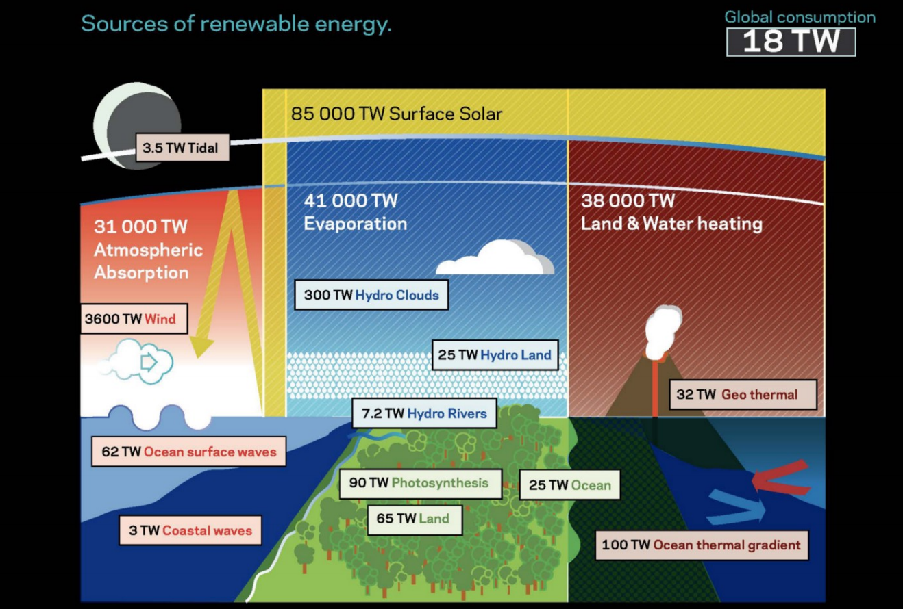Wanting to know more on the topic of climate mitigation, I pondered for new potential aspects of analyzing and understanding this problem. Later in my English class, I tried to analyze elements in the novel we read, pointing out signs and symbols of the relationship betwen human and nature in that piece of literature, so that I can view this problem of climate change in both literature and historical way. Paper: https://moonshotacademy.sharepoint.com/sites/IPClimateMitigation/_layouts/15/Doc.aspx?sourcedoc=%7BD60EB12C-BF04-46D1-8F8C-5036835592CB%7D&file=Final%20Paper.docx&action=default&mobileredirect=true.
Knowing what lies before us if we do not take any action, we dived into our work and split into two groups: Engineering and Finance. I took on the role as one of the Engineering Leads.
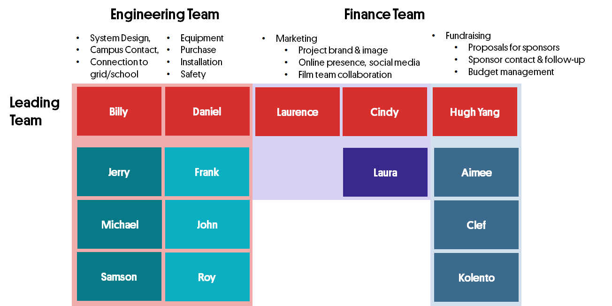We first went into researches of different topics and made + iterated small tutorial videos on each of them, aiming for guiding other people also interested in installing solar panels and contributing to climate:
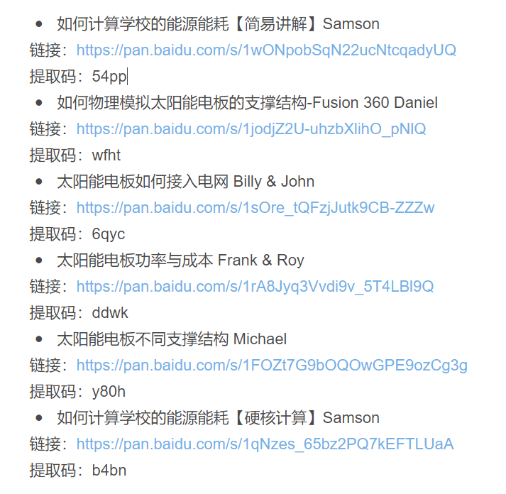Video Links here
Comments and Feedback we gave each other: https://shimo.im/sheets/JDHPhyxCJDYGqtqd/MODOC
I personally made a video talking about physical simulation using Fusion 360 (used in designing support of solar panels in the future):
In the meantime, the leader group (called "Lead Circle") is constantly talking about the project outcome, drawing out Gantt chart, designing workshops, sessions, and checkins every week. This is a screenshot of the final version of our Gantt Chart:
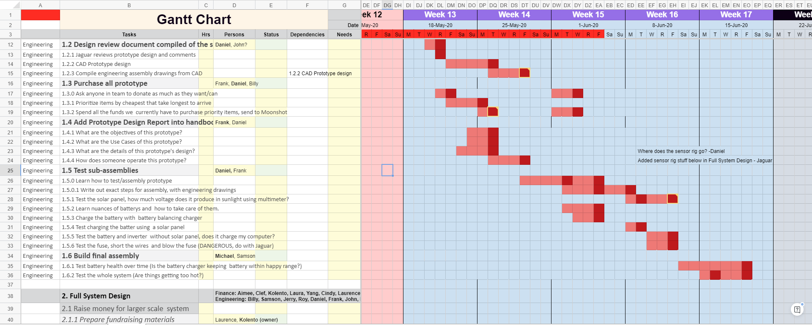Full Gantt Chart: https://shimo.im/sheets/VOAWVaW1y8H8FYkZ/CxTq3
Our talking about next steps and questions:
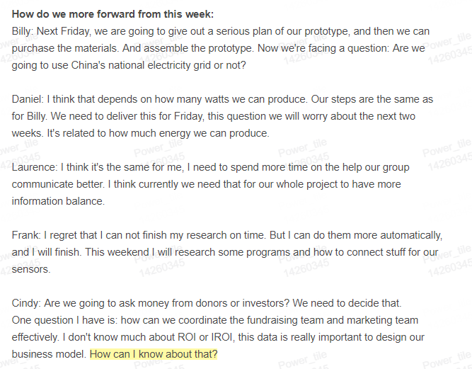All meeting notes: https://shimo.im/folder/7OAYV4JRmWcMsb3D (do not recommend, too much information and trivia)
We also have a planner tracking what everyone is doing:
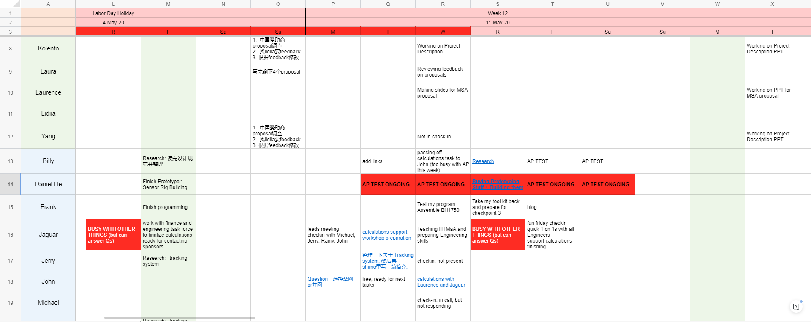In order to push exponential learning and learn from each other constantly, we also use the almighty MATRIX to document our learning and our evidence throughout the project:
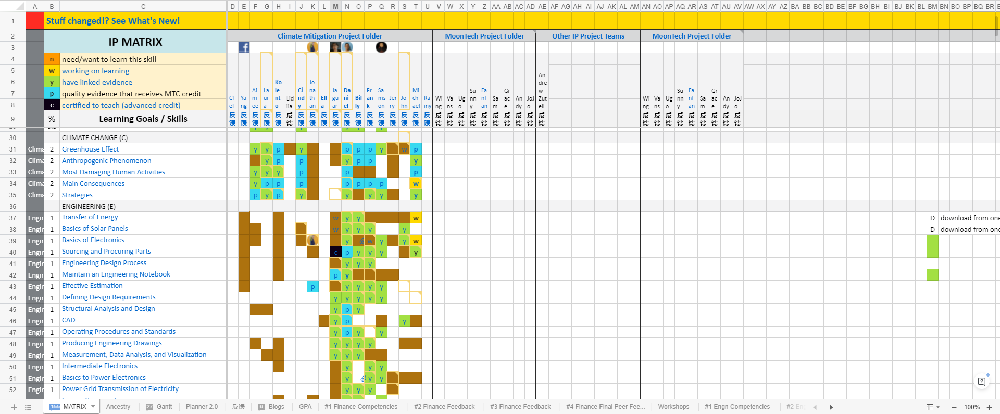...where my row is in row N. Green stands for "have linked evidence", and blue stands for "have quality evidence that receives MTC credit". Each block in this chart is linked to a document, some screenshots, some files, or some videos showing what I did.
MATRIX https://shimo.im/sheets/VOAWVaW1y8H8FYkZ/MODOC
After building the teams and went through research, we decided to dive more into estimations and calculations. To facilitate this process, I did a workshop on how to do research and identify resources. Video can be found https://moonshotacademy.sharepoint.com/sites/IPClimateMitigation/_layouts/15/SkySyncRedir.aspx?Type=2&ResourceId=9b72c1854d014a4693152fd7d13d6f48.
I personally did an estimation on energy production on our solar panels based on data from project Google Sunroof. The estimation is not very accurate because the data was taken from the US, and I used the relationship between radiation as well as the number and power of the solar panels and the final power generation + the data of Beijing's solar radiation to complete the estimation.
I also participated in the estimation of power consumption for the new campus. The result was proved by architects that design the new campus, which is sooo awesome.
All of our calculations can be found https://shimo.im/sheets/r4ArzBePeVTYFgAV/QjPjG.
After doing these basic calculations, we decided to move on the prototyping design. We decided to first work out a small prototype for solar panels. However, on our way, we realized that when we are doing the full system design, we need specific information on the solar radiation at different parts of our roof in order to determine the needed size of battery, inverters, and various other components. Therefore, we decided to form a new group designing a "sensor rig" aiming for collecting data of solar radiation for further data analysis and estimation.
I was in charge of the sensor rig prototyping group, as well as designing the rig + modelling the parts.
Sketch for sensor rig:
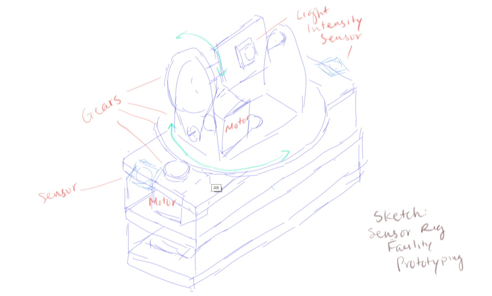Modelling of sensor rig using Fusion 360:
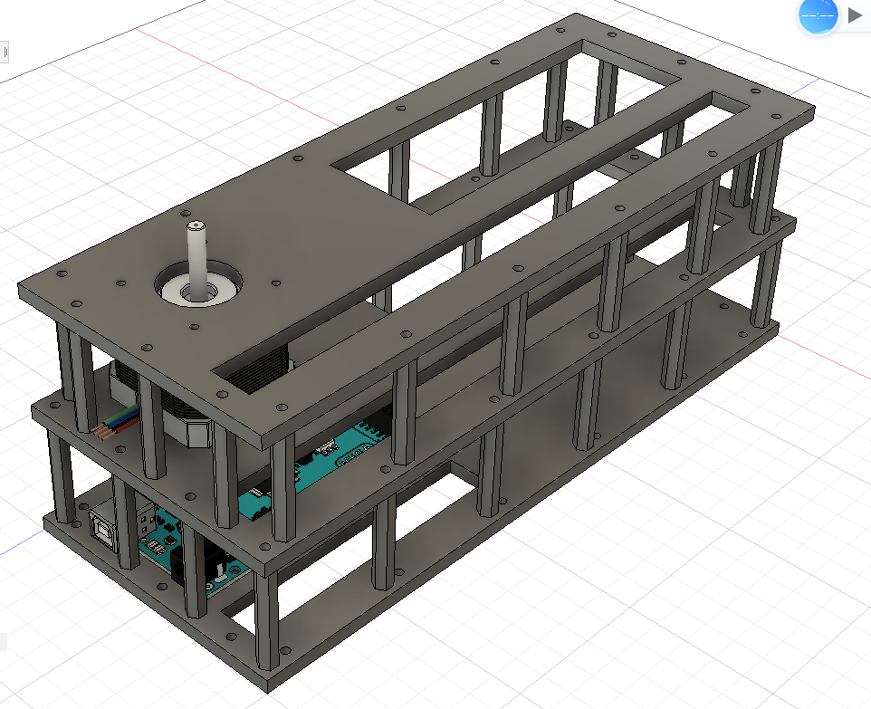For the control program, I also built the skeleton of the program (logistics, function calls, branches, comments, etc.) and Frank, our other programmer, was coding the actual controlling of each part. I also conducted some code review with him after he finished coding.
Peek to "code skeleton" I wrote for the sensor rig:
 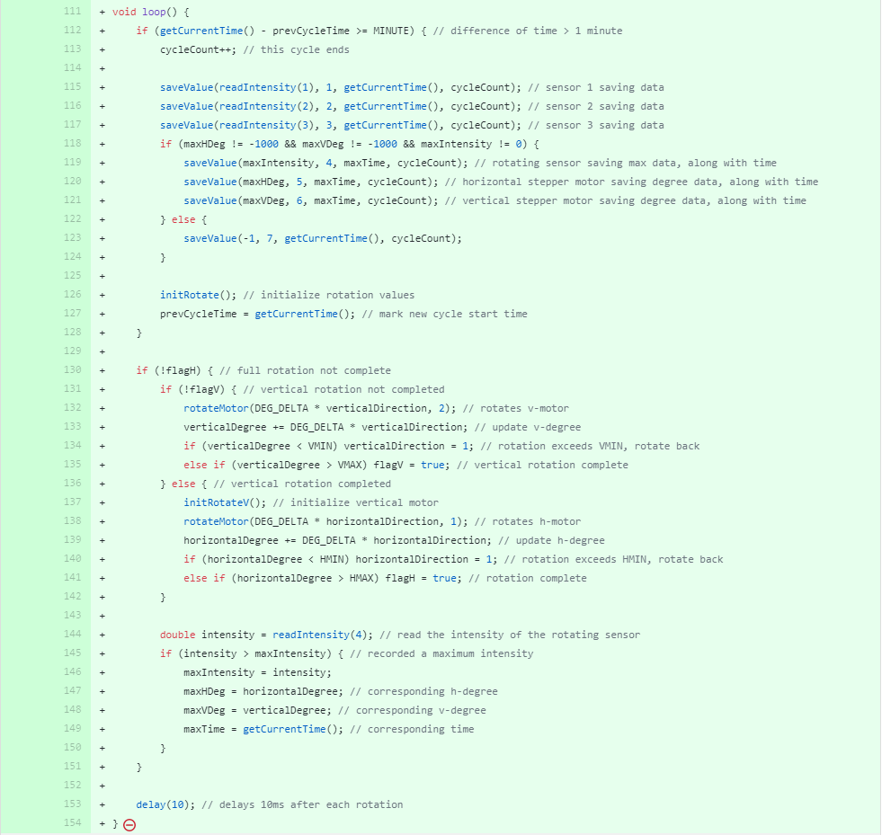
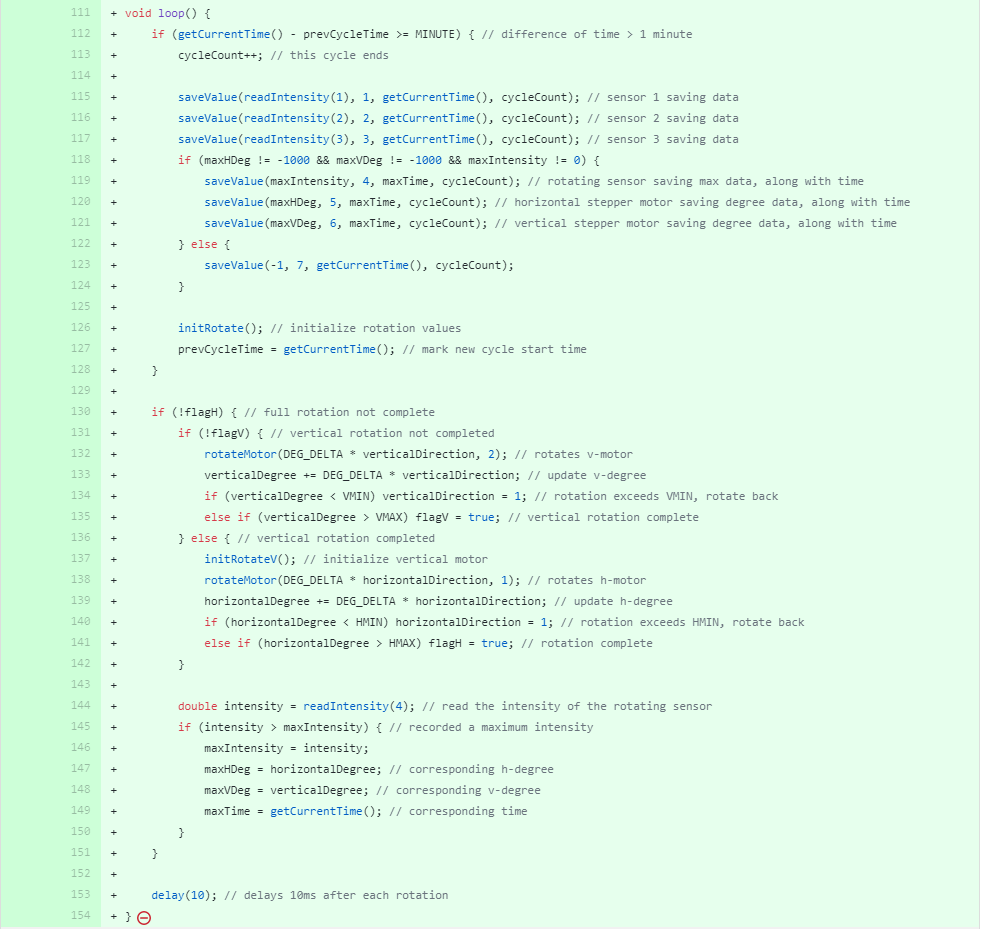
Detailed Information on Sensor Rig: https://shimo.im/docs/8l3aVWl0EKc9F2qy#anchor-hPJy
After we are three fifths into our project time, we realized that we are not able to go back to school before the Interdisciplinary Project course ends on June 18th. We decided to reform our expectations and criterize our final outcome. We decided to decrease outcome for both teams, but we will together compile a handbook to facilitate work done on this project next semester, as well as people with similar goals.
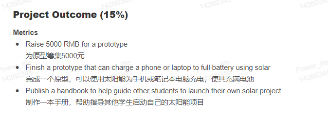Meeting notes, where this decision is made (contains project analysis, current risks, opportunities, and everyone's voice): https://shimo.im/docs/GokLVrJDo2iBF032
We also made a WBS (work breakdown structure) mindmap to better manage our project:
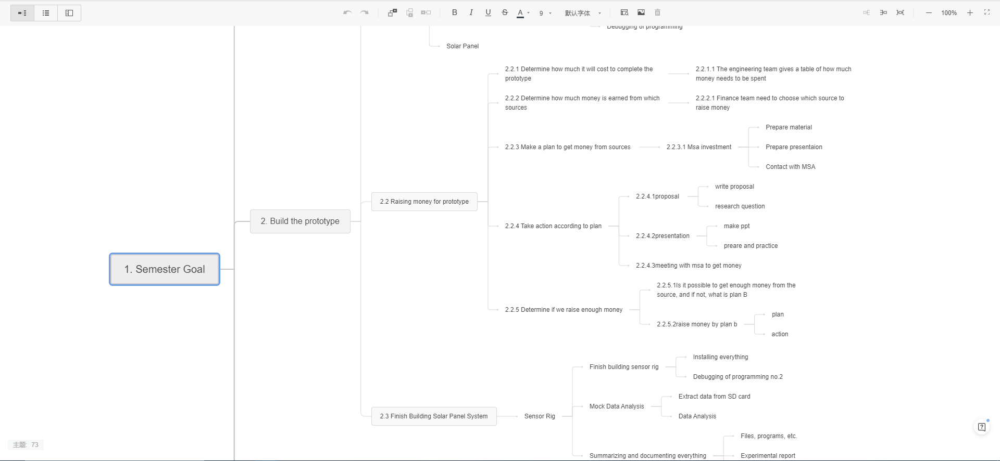Knowing that we are not able to finish designing and installing the full system + having the whole sensor rig group getting a bit tired, I decided to move my entire group into the realm of full system design. Meanwhile, we received the bad news that the area reserved for solar panels on the new campus is decreased drastically from 500 square meters into only about 120 square meters. I joined the group and helped analyzing the situation, along with new + missing calculations we need.
Part of my analysis:
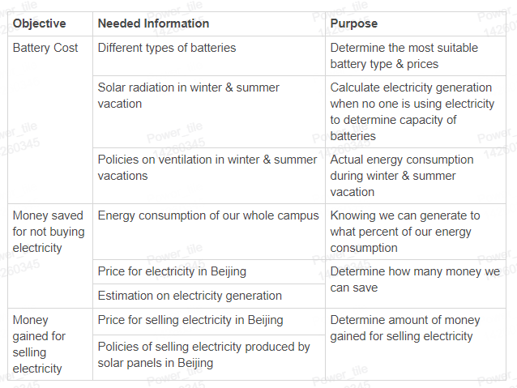My sending out responsibilities:
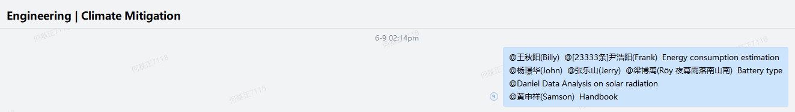Whole logic and analysis can be found here: https://shimo.im/docs/8l3aVWl0EKc9F2qy#anchor-PbAe
Estimation with only 120 square meters: https://shimo.im/sheets/r4ArzBePeVTYFgAV/SjUNT
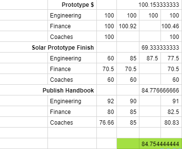In the end, we did not get back to Beijing. For the engineering part, we signed the contract with the company we collaborated with, but was not able to assemble and test the solar panel prototype. We rated our project completion rate at a percentage of 84.7544%.
It is certain that we will continue working on this project in next semester, maybe as a makerspace project.
Personal Reflection
In the last reflection session of the IP course, I mentioned that this project is far from what I thought it would be. The growths I achieved here is actually full of surprises, and I will briefly point out where I think I grew the most.
Things I did well:
- I actually did not expect the CAD in this project in this project to be so challenging. I was responsible for designing the sensor rig prototype 3D model, and I had to compare the tools I may use (Fusion 360, Solidworks, Maya, 3dsmax, etc.) to choose the suitable tool I needed. In the end I learned how to model in Fusion 360 by myself and did the modelling.
- This is also the first time that I tried to write the code structure and ask someone else to complete the program + the first time for me to conduct a code review. This thought originated from the project management structures and code review I encountered in the project of Dashboard + the Unity source code I read 1 year ago.
- I learned to view a problem/topic creatively from more perspectives, even from an "outer view", not only examining the phenomenons around us, but levitate onto a global platform. This project gave me the inspiration of writing my paper in English class, where I analyzed the relationship between man and nature shown in three different novels (The Good Earth, Things Fall Apart, and Of Mice and Men, respectively) which took place in a similar time period but societies of different advancement level. I aldo had the opportunity to delve into this problem chronologically, examining the "change over time" in my paper.
- I am also more active in contributing to the Matrix by helping adding skills to the matrix, clarifying what it means to my teammates, actively adding evidences onto the skillstrands, and using it as a guiding meter of my learning.
- I had a lot more experience on teamworking with people that I am not familiar. The coronavirus outbreak not only kept us physically far; they also blocked many chances of reaching out to people you are not used to. Being a leader of the engineering group was actually harder than I thought, but in the meantime I can better facilitate the online brainstorming, dividing responsibilities, tracking of each people, asking for deadlines, even conducting 1-on-1s with some of my teammates.
- I am also able to use things I learned before into this project actively, e.g. Simple Data Analysis with Python; Arduino & C++ Coding; etc.
Things I need to improve:
- I need to document my processes more frequently on my blogs, not only for sharing our process, but also for my own learning.
- I should focus on my team in the meantime I am busy working on my own part, and realize what is best for our team quicker. Both Jaguar and I agreed that although I migrated to the full system design later, I still spent a lot of effort on designing the sensor rig, which is a bit diverged ffrom our final outcome of building a functional solar panel prototype.